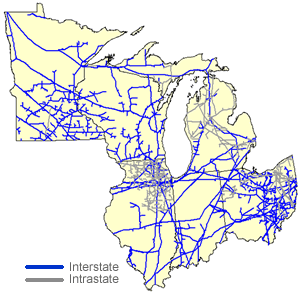

|
About U.S. Natural Gas Pipelines - Transporting Natural
Gas
based on data through 2007/2008 with selected updates |
|||||||||||||||||||||||||||||||||||||||||||||||||||||||||||||||||||||||||||||||||||||||||||||||||||||||||||||||||||||||||
|---|---|---|---|---|---|---|---|---|---|---|---|---|---|---|---|---|---|---|---|---|---|---|---|---|---|---|---|---|---|---|---|---|---|---|---|---|---|---|---|---|---|---|---|---|---|---|---|---|---|---|---|---|---|---|---|---|---|---|---|---|---|---|---|---|---|---|---|---|---|---|---|---|---|---|---|---|---|---|---|---|---|---|---|---|---|---|---|---|---|---|---|---|---|---|---|---|---|---|---|---|---|---|---|---|---|---|---|---|---|---|---|---|---|---|---|---|---|---|---|---|---|
|
Twenty-six interstate and at least eight intrastate natural gas pipeline companies operate within the Midwest Region (Illinois, Indiana, Michigan, Minnesota, Ohio, and Wisconsin). The principal sources of natural gas supply for the region are production areas in the Southwest, although Canadian natural gas pipelines now account for about one-fourth of natural gas pipeline capacity entering the region. Regional natural gas production, principally from Ohio and Michigan, accounts for little more than 8 percent of the gas consumed in the region. Transportation of Domestic Natural Gas Supplies Traditionally, the principal sources of natural gas for the Midwest Region have been the panhandles of west Texas and Oklahoma, the States of Kansas and Louisiana, and eastern Texas. However, by the close of 2009, when the new Rockies Express East pipeline is scheduled to be completed, the capability to transport up to 1.8 billion cubic feet (Bcf) per day of natural gas directly from the Central Region's Rocky Mountain area to the Midwest Region will be instituted. Currently (1st qtr 2009), approximately 17 Bcf per day of the 28 Bcf per day of peak-day capacity (61 percent) entering the Midwest via the interstate network comes from production areas in the Southwest Region. The interstate pipeline systems that provide this transportation capacity are some of the largest in the nation. Two of those pipeline systems, ANR Pipeline Company (ANR) and Natural Gas Pipeline Company of America (NGPLA), operate on corridors that transport supplies from the Texas, Oklahoma, Kansas, and Louisiana production areas. NGPLA provides about 12 percent (3.4 Bcf per day) of the total throughput capacity into the region and terminates in the Chicago, Illinois, area. ANR can transport 2.0 Bcf per day into the region and operates in all Midwest States except Minnesota, terminating in Michigan and Indiana. Three systems, Northern Natural Gas Company, Panhandle Eastern Pipeline Company, and Centerpoint Mississippi River Transmission Company transport gas to the Midwest from the Texas/Oklahoma/Kansas production area, while four others, Texas Gas Transmission Company, Trunkline Gas Company, Texas Eastern Pipeline Company, and Tennessee Gas Pipeline Company systems begin in Louisiana and east Texas and proceed directly north into the Midwest Region. However, most of the capacity on the latter two systems is intended for markets in the Northeast, with few or no deliveries within the Midwest Region itself. |
Midwest Region Natural Gas Pipeline Network

|
||||||||||||||||||||||||||||||||||||||||||||||||||||||||||||||||||||||||||||||||||||||||||||||||||||||||||||||||||||||||
The three most recent additions to the regional network are the Horizon Pipeline (0.4 Bcf per day) and the Guardian Pipeline (1.3 Bcf per day) interstate systems, both completed in 2002, and the Heartland Pipeline Company (0.08 Bcf per day), an intrastate pipeline, completed in 2006. The Horizon and Guardian systems receive natural gas supplies in the Chicago area from the interstate natural gas pipeline system for delivery to expanding markets in northern Illinois and the greater Milwaukee, Wisconsin, metropolitan area. The Heartland Pipeline extends from an interconnection with Midwestern Gas Transmission in Sullivan County, Indiana, to Indianapolis-based Citizens Gas' underground storage facilities in Greene County. The Crossroads Pipeline Company (0.3 Bcf per day), an affiliate of Columbia Gas Transmission Company, provides natural gas transportation for shippers seeking a route between interstate natural gas pipelines serving western Indiana to interconnections in central Ohio to the Columbia Gas Transmission Company system. For the most part, natural gas customers (and LDCs) in Indiana are dependent upon interstate pipelines that traverse the State. Only the Texas Gas Transmission Company system terminates in the State, where it directs about 30 percent of its total system capacity. In the eastern half of the region, such as in Ohio, the interstate Dominion Transmission Company and Columbia Gas Transmission Company systems predominate. Each system provides extensive service to affiliated local distribution companies (LDCs) (NiSource and Dominion), and in the case of Columbia, access to 15 underground natural gas storage sites located in Ohio. Both systems are essentially extensions of natural gas pipeline operations that developed historically in Pennsylvania and West Virginia. In fact, a portion of the natural gas delivered in Ohio from these systems originates with natural gas production in Appalachia. Importance of Canadian Natural Gas Imports to the Region Seven interstate natural gas pipeline companies transport Canadian natural gas into or out of the Midwest (see Table below) with a combined capacity of approximately 8.4 Bcf per day, or about 30 percent of the total interstate capacity entering the region. A decade ago, import capacity represented only about 10 percent of the capacity into the region. The largest natural gas importing pipeline in the region is the Great Lakes Gas Transmission Company (2.9 Bcf per day) system, which links to the TransCanada Pipeline Ltd system at the Manitoba/Minnesota border and proceeds through the northern portion of Minnesota, Wisconsin, and Michigan and southward through Michigan to the Michigan/Ontario border. [Map and Table of Import/Export Points] However, a large portion (about 85 percent) of the natural gas transported on the Great Lakes Transmission Company system is delivered back into Canada for consumption in Ontario and eastern Canada. In contrast, Viking Gas Transmission Company (0.5 Bcf per day) receives Canadian natural gas at the same Manitoba/Minnesota border point as Great Lakes Transmission Company (Noyes, Minnesota), but its volumes are delivered and consumed entirely within the United States with deliveries to eastern North Dakota, Minnesota, and central Wisconsin. Natural gas transportation on the Northern Border Pipeline Company system (2.5 Bcf per day) reaches the Midwest Region by way of the Central Region (from the Saskatchewan/Montana border, through North Dakota, South Dakota, Minnesota, and Iowa, -- then into Illinois (0.99 Bcf per day) and finally western Indiana). The Northern Border Pipeline Company system physically reached the Midwest for the first time in 1998 with completion of a 200-mile extension from Iowa (Central Region) to the vicinity of Chicago, Illinois. In the Chicago area, the Northern Border Pipeline system interconnects with several other interstate pipelines and with several LDCs, including NICOR and Peoples Gas & Light Company. In 2001, Northern Border Pipeline Company system also interconnected with the new Vector Pipeline Company at the Chicago hub, permitting its shippers of western Canadian (Alberta) natural gas an alternative route to reach delivery points in Ontario, Canada. Subsequently, the Northern Border Pipeline Company system was also extended (34 miles, 0.6 Bcf per day) to just east of the Indiana/Illinois border where it provided its shippers access to the Indiana/Ohio market with direct interconnections to customers such as the Northern Indiana Public Service Company (NIPSCO). The new extension also included local interconnections with other interstate natural gas pipeline systems in Indiana. A sizable portion of the natural gas transported on the Northern Border Pipeline Company system still reaches the Midwest indirectly through interconnections with the Northern Natural Gas Company and Natural Gas Pipeline Company of America interstate systems in Iowa. The Northern Natural Gas Company, which also provides shippers with natural gas transportation services to Midwest markets from the Southwest Region's production fields, operates an extensive network of pipelines in southern Minnesota, Wisconsin, and in northwestern Illinois. For the most part, the natural gas that flows on the Centra Pipelines Minnesota Company system, the smallest (0.06 Bcf per day) of the natural gas importing pipelines, does not remain in the United States. Instead, this natural gas pipeline system transports gas to Canadian customers located in southwestern Ontario who do not have access to other Canadian natural gas pipeline sources. The Centra Pipelines Minnesota Company receives its Canadian natural gas supplies at the Manitoba/Minnesota border. It then crosses the northern section of Minnesota on an eastward route until it re-enters Canada at the Minnesota/Ontario border. The newest large capacity pipeline to import Canadian natural gas into the region is the Alliance Pipeline Company system (1.9 Bcf per day). Completed in late 2000, the U.S. portion of the Alliance system extends from the Saskatchewan/North Dakota border southeast through Minnesota and Iowa, and terminates in the vicinity of Joliet, Illinois, at the Aux Sable natural gas processing plant. The "wet" gas that is processed at the Aux Sable processing plant is delivered "dry" (pipeline quality natural gas) at its tailgate to several major interstate natural gas pipelines, including ANR Pipeline Company, Natural Gas Pipeline Company of America, Midwestern Gas Transmission Company, and Vector Pipeline Company, for shipment to customers in Illinois, Indiana, Ohio, Michigan, and Ontario, Canada. In addition, several intrastate natural gas pipeline companies, and LDCs, including Peoples Gas & Light Company and Northern Illinois Gas Co (NICOR), receive natural gas at the Aux Sable tailgate. |
|||||||||||||||||||||||||||||||||||||||||||||||||||||||||||||||||||||||||||||||||||||||||||||||||||||||||||||||||||||||||
| Principal Natural Gas Pipeline Companies Serving the Midwest Region
with links to pipeline web sites
|
|||||||||||||||||||||||||||||||||||||||||||||||||||||||||||||||||||||||||||||||||||||||||||||||||||||||||||||||||||||||||